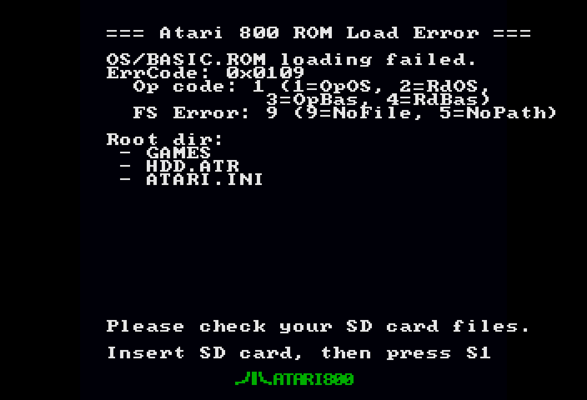

3. Primeros pasos
De una tarjeta SD vacía a un prompt de BASIC, un disco arrancado y un cartucho corriendo, en pocos minutos.

1. Prepara la tarjeta SD
Formatea una tarjeta micro-SD en FAT32 (de 32 GB o menos) y copia los dos archivos ROM en el directorio raíz. Todo lo demás es opcional:
/
├── ATARIXL.ROM ← ROM del OS Atari XL/XE, exactamente 16384 bytes
├── BASIC.ROM ← ROM de Atari BASIC, exactamente 8192 bytes
├── HDD.ATR ← opcional: se monta sola en D4: en cada arranque; tu
│ "disco duro" permanente (cualquier ATR; ideal formateado con MyDOS)
├── HDD/ ← opcional: la carpeta del dispositivo H:; los archivos aquí
│ se comparten entre el Atari (H:) y el PC Link
├── games/ ← tus discos .atr y cartuchos .car/.rom, en las carpetas
└── ... que quieras; los nombres largos funcionanATARIXL.ROM y BASIC.ROM. Los nombres se reconocen sin distinguir mayúsculas de minúsculas (atarixl.rom también sirve), pero los tamaños deben ser exactos. El firmware carga ambas ROM desde la tarjeta en cada encendido.2. Graba el bitstream
Descarga el zip de la última versión publicada (release) en GitHub y extrae atari800_tn20k.fs. Ese único archivo es la máquina completa: el firmware va incorporado en el bitstream, así que no hay un firmware aparte que grabar ni nada más que escribir en la placa. Las ROM, los discos y los cartuchos viven en la tarjeta SD, no en la flash.
La placa se graba por su propio cable USB-C; no hace falta ningún programador ni adaptador. El chip de la placa se presenta ante el PC como un dispositivo FTDI de dos canales: el canal A es el programador JTAG y el canal B es el puerto serial que usa el PC Link. Las dos herramientas de abajo escriben el bitstream en la flash externa de la placa, así que sobrevive al apagado. Se graba una vez por versión, no cada vez que enciendes.
atari.py log o kbd, un programa de terminal. La tarjeta SD y el HDMI pueden quedar conectados.Linux (y macOS): openFPGALoader
El programa libre y de código abierto openFPGALoader es la forma más simple y no necesita cuenta ni licencia. Instálalo desde tu distribución y luego graba:
# Debian / Ubuntu / Mint
sudo apt install openfpgaloader
# Fedora
sudo dnf copr enable mobicarte/openFPGALoader && sudo dnf install openFPGALoader
# Arch
sudo pacman -S openfpgaloader
# macOS
brew install openfpgaloader
# luego, con la placa conectada:
openFPGALoader -b tangnano20k -f atari800_tn20k.fs-b tangnano20k selecciona la placa y -f escribe la flash externa. La herramienta muestra el avance del borrado y la escritura y termina con Done; la placa se reconfigura sola y, con una tarjeta insertada, arranca a READY unos segundos después.
Si aparece unable to open ftdi device o un error de permisos, tu usuario todavía no puede abrir el dispositivo USB. Ejecuta el mismo comando con sudo, o instala una sola vez la regla udev para no necesitarlo nunca más: copia 99-openfpgaloader.rules desde las fuentes de openFPGALoader a /etc/udev/rules.d/, ejecuta sudo udevadm control --reload-rules && sudo udevadm trigger, agrégate al grupo plugdev con sudo usermod -a -G plugdev $USER y vuelve a iniciar sesión.
Windows: Gowin Programmer
openFPGALoader no tiene una versión lista para Windows, así que en Windows usa el Programmer de Gowin. Es gratis: para grabar no se necesita licencia, solo una cuenta de Gowin para descargarlo. Sipeed además publica un paquete del Programmer solo, con los drivers USB incluidos, que es el camino más fácil:
- Instala el Programmer. Descárgalo desde el espejo de Sipeed en dl.sipeed.com/shareURL/TANG/programmer (Programmer más drivers, sin cuenta) o desde la página de descargas de Gowin (crea una cuenta gratuita; la edición Education no necesita licencia y el Programmer viene dentro). Instala el driver USB cuando el instalador lo ofrezca.
- Conecta la placa con el cable USB-C y espera unos diez segundos a que Windows termine de instalar el dispositivo. En el Administrador de dispositivos deberían aparecer dos entradas USB Serial Converter (A y B); para grabar no hace falta ningún puerto COM.
- Abre el Programmer y haz clic en Scan Device (el ícono de la lupa). Debería encontrar un dispositivo, GW2AR-18C. Si no encuentra nada, revisa la lista de problemas más abajo.
- Configura la operación. Haz doble clic en la fila del dispositivo (o usa Edit → Configure Device) y define:
- Access Mode: External Flash Mode
- Operation: exFlash Erase, Program thru GAO-Bridge (en algunas versiones del Programmer la entrada se llama exFlash Erase, Program; cualquiera de las dos sirve)
- Programming Options → File name: tu
atari800_tn20k.fs - External Flash Options → Device: Generic Flash, Start Address: 0x000000
- Graba. Haz clic en el botón Program/Configure (el ícono verde de reproducir). La barra de progreso pasa por borrado, grabación y verificación; la columna de estado muestra Success al terminar. La placa se reconfigura sola y arranca a READY.
Si el Programmer no encuentra la placa:
- Instala el driver del paquete de programador de Sipeed y vuelve a conectar el cable. A veces Windows necesita un segundo intento después de la primera conexión.
- Cierra cualquier programa que tenga abierto el puerto COM de la placa (la aplicación del PC Link, un terminal). El canal JTAG y el canal serial comparten el chip.
- Prueba con otro cable o puerto USB-C. Los cables solo de carga no llevan datos, y un cable en mal estado hace que la placa se desconecte y reconecte (ver Solución de problemas).
- En la configuración del cable, deja la frecuencia en 2.5 MHz o menos; relojes JTAG más altos no son confiables a través del chip de la placa.
openFPGALoader también puede correr en Windows mediante MSYS2 (paquete mingw-w64-ucrt-x86_64-openFPGALoader) después de reemplazar con Zadig el driver de la interfaz USB 0 por WinUSB. Funciona, pero son más pasos que el Programmer y una elección equivocada en Zadig puede dejar sin funcionar el puerto serial, así que solo vale la pena si ya usas MSYS2.
Comprueba que quedó grabado
Con cualquiera de los dos métodos: LED5 empieza a parpadear lento (el latido del firmware), luego LED3 se enciende cuando las ROM se cargaron desde la tarjeta, y la pantalla muestra READY. Si LED5 no parpadea, la grabación no terminó: repítela. Si LED5 parpadea pero no pasa nada más, el problema es la tarjeta SD, no la grabación; ve al paso 3 más abajo.
3. Primer encendido
- Inserta la tarjeta SD y conecta el cable HDMI al monitor.
- Alimenta la placa por el puerto USB-C.
Un arranque sano se ve así:
- La pantalla muestra el prompt READY de Atari BASIC. No aparece ningún menú: la máquina arranca sola directamente en BASIC.
- LED3 (pin 18) queda encendido fijo: las ROM se cargaron y el Atari está corriendo.
- LED5 (pin 20) parpadea a unos 0.8 Hz: el latido (heartbeat) de la FPGA.
La pantalla de error de ROM
Si el firmware no puede cargar las ROM, el Atari no arranca y el menú muestra el fallo en lugar de BASIC. Comprueba que:
- la tarjeta SD esté formateada en FAT32 y bien insertada;
ATARIXL.ROM(16384 bytes) yBASIC.ROM(8192 bytes) estén en el directorio raíz.
Corrige la tarjeta, vuelve a insertarla y pulsa S1 (reset de hardware) o apaga y vuelve a encender la placa. Con el PC Link también puedes rescatarla sin tocar la tarjeta: el puente responde en la pantalla de error de ROM, así que puedes enviar (send) las ROM que faltan por el cable y pulsar una tecla para reintentar.


4. Arranca un disco en 60 segundos
- Copia una imagen de disco
.atren cualquier lugar de la tarjeta SD (raíz o una subcarpeta). - Enciende: el Atari arranca en BASIC.
- Abre el OSD con S2 (o F12 en un teclado).
- Elige 1) D1: → Attach disk... (adjuntar disco), navega hasta tu
.atry pulsa Fire / Enter para montarlo. - Elige 4) Boot to OS (No BASIC) (arrancar el OS sin BASIC): el Atari arranca en frío desde el disco montado con BASIC desactivado (por ejemplo, en DOS). Solo un disco que necesite BASIC residente requiere en su lugar 7) Hard Reset (reinicio en frío).
La imagen montada aparece en la línea D1: del menú. Usa D2: para discos de datos o para el disco 2 de los juegos de varios discos, o cambia D1: en vivo cuando un juego pida el siguiente disco. Ver Discos.

5. Ejecuta un cartucho en 60 segundos
- Copia un
.car(o un.romcrudo de 2/4/8/16 KB) a la tarjeta SD. - Abre el OSD con S2 / F12.
- Elige 3) Cart: → Attach cartridge... (adjuntar cartucho) → escoge el archivo: arranca de inmediato.
Para volver al menú de un cartucho multijuego después de un juego, usa 7) Hard Reset. F9 es la tecla RESET real y normalmente termina en BASIC: eso mismo hace un Atari de verdad. Ver Cartuchos.
Por dónde seguir
- Instalación del hardware: cablea un adaptador de teclado (5 V, GND y datos al pin 53) y joysticks.
- El menú OSD: cada elemento del menú explicado.
- Opciones y atari.ini: flechas como joystick, scanlines, posición de la imagen, estéreo, RAM.
- Ejecutables (.xex): ejecuta programas de carga binaria directamente desde la tarjeta.
- PC Link: envía archivos y teclea desde el PC por el cable USB-C.
- Solución de problemas: si algo de esta página no salió como se esperaba.